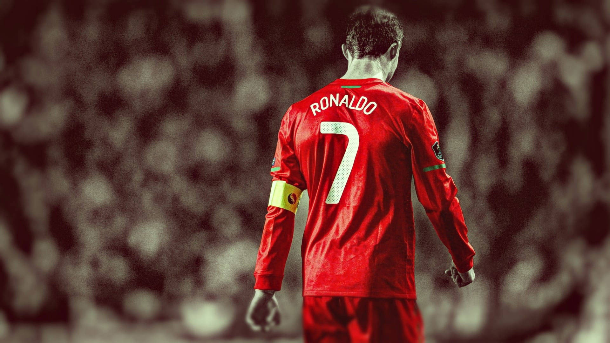

VÃtejte na fanouškovské stránce Cristiana Ronalda!
Cristiano Ronaldo je portugalský profesionálnà fotbalista, považovaný za jednoho z nejlepÅ¡Ãch hráčů všech dob. Na této stránce se dozvÃte vše o jeho kariéře, úspěšÃch a nejlepÅ¡Ãch momentech.
